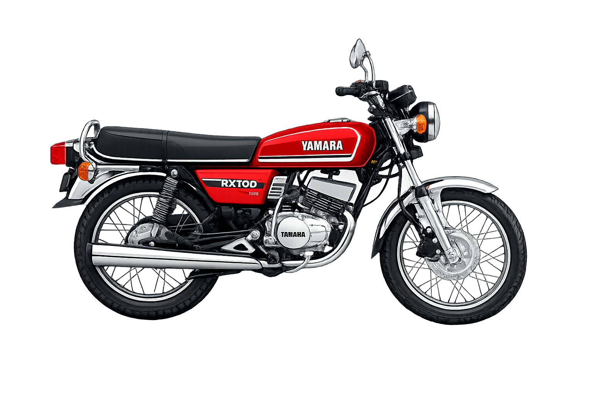

1950s-1970s: The Foundation Era
Early road presence came from rugged machines built for practicality, government use, and long-distance durability.
India's motorcycle journey reflects innovation, reliability, and emotional connection with the road.
Early road presence came from rugged machines built for practicality, government use, and long-distance durability.
Fuel-efficient motorcycles became household essentials, changing mobility for middle-class families and daily workers.
Sportier styling, better technology, and aspirational branding transformed bikes into lifestyle statements.
Today's market includes premium cruisers, ADV tourers, performance bikes, and rapidly growing electric options.

The Yamaha RX 100 became an icon in India after its mid-1980s launch, known for quick acceleration, lightweight feel, and the distinct two-stroke exhaust note. Even today, it remains a cult classic among enthusiasts and collectors.

The Hero Honda Splendor reshaped daily commuting in India from the 1990s onward. It became one of the country's highest-selling bikes because of strong mileage, low maintenance, and long-term reliability.